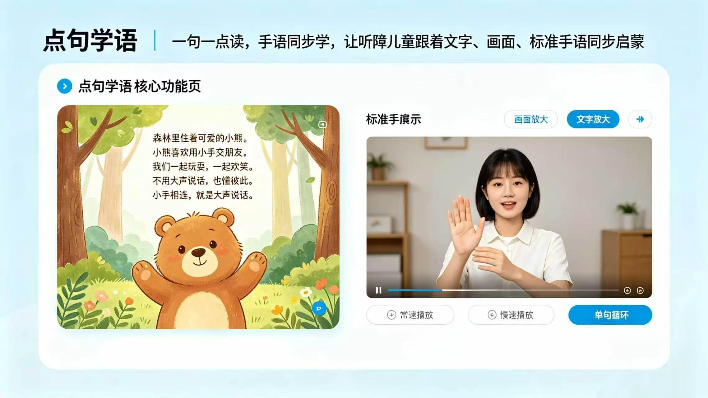

创新模式
内容创编解决“读什么”，专业审校解决“怎么准确表达”，数字伴读解决“怎么方便使用”，纸质销售、数字服务与版权合作则用于验证公司如何形成可持续收入。
内容适龄原创
标准专家双审
服务多端协同
项目总述
星语童阅不是只做三本手语绘本，而是围绕不同儿童阅读需要建立四系列产品矩阵。首期选择“指尖有光”，因为目标用户和沟通需求更清楚，现有三本样书也能直接验证内容创编与数字伴读能力。
“触见星空”“心向远方”“慢慢长大”目前属于第二、第三阶段规划，尚未作为成品发布。后续必须分别完成需求调研、专业评估、概念样张和目标儿童试读，不能把规划包装成成果。
内容创编解决“读什么”，专业审校解决“怎么准确表达”，数字伴读解决“怎么方便使用”，纸质销售、数字服务与版权合作则用于验证公司如何形成可持续收入。
研发机制
项目当前展示创编与数字产品原型；正式出版和推广前，还需引入手语、儿童发展、盲文触觉设计等相应专业审校。
负责儿童发展分析、绘本主题规划、语言难度控制、课堂活动与家庭陪读设计。
正式发布前，需由相应专业人员和手语使用者共同审核词汇、手形、方位、动作、表情与视频节奏。
实现点句伴读、变速循环、班级管理、数据反馈与电脑、平板、手机多端适配。
项目成果
 5页连贯试读
5页连贯试读
围绕生活认知、情绪管理、社交规则和科学启蒙形成系列化选题。

完成多页面官网、逐句伴读、视频变速循环、机构账号与多端响应式体验。
围绕目标家庭、专业使用者、价格带、获客渠道和小批量试售建立验证指标。
研发标准说明
所有正式上线资源均需经过内容、手语、教育应用与技术发布四道审核。
联系方式与合作洽谈
欢迎出版社、儿童内容平台、听障康复机构、特教机构、渠道合作方与投资孵化平台联系我们，开展联合出版、内容授权、产品采购与商业合作。
邮箱：3826676920@qq.com 项目支持：吉林师范大学创新创业项目
经营闭环
长期展望
当产品销售和现金流进入稳定阶段，团队希望从年度预算中安排少量绘本赠阅。社会责任建立在健康经营之上，不作为项目前期的主要商业叙事。